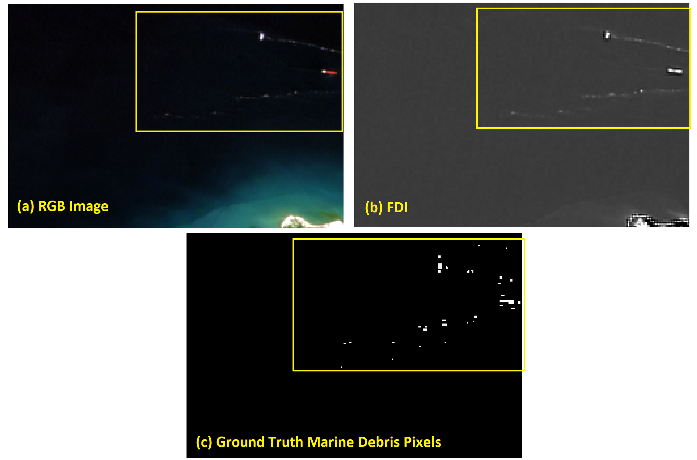
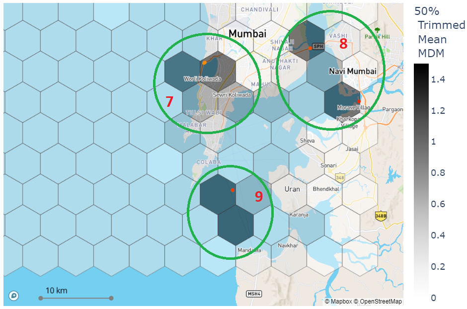
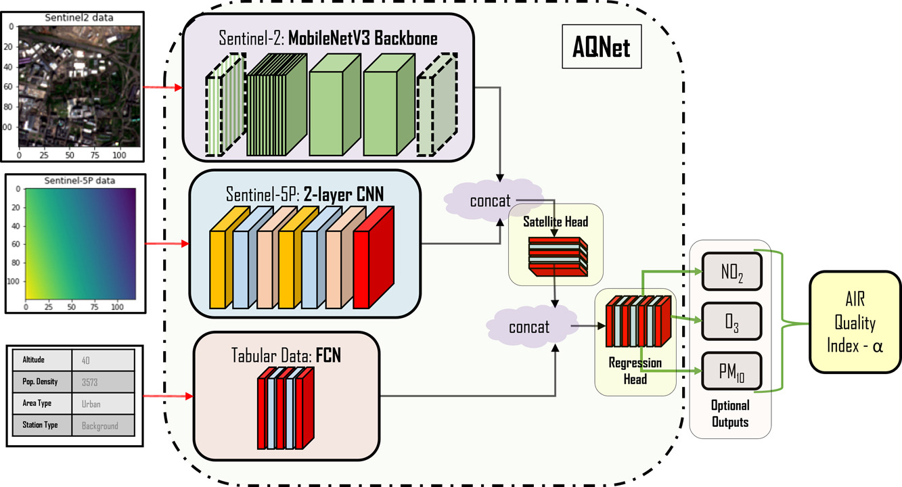
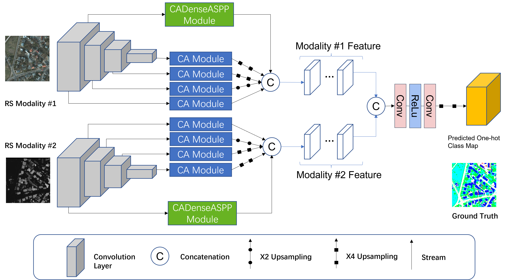

Environmental Remote Sensing

Notable Publications
Marine plastic pollution is an emerging environmental problem since it pollutes the ocean, air and food whilst endangering the ocean wildlife via the ingestion and entanglements. During the last decade, an enormous effort has been spent on finding possible solutions to marine plastic pollution. Remote sensing imagery sits in a crucial place for these efforts since it provides informative earth observation products, and the current technology offers further essential development. Despite the advances in the last decade, there is still a way to go for marine plastic monitoring research where challenges are rarely highlighted. This paper contributes to the literature with a critical review and aims to highlight literature milestones in marine debris and suspected plastics (MD&SP) monitoring by promoting the computational imaging methodology behind these approaches along with detailed discussions on challenges and potential future research directions.


The last couple of years has been ground-breaking for marine pollution monitoring purposes. It has been suggested that combining multi-spectral satellite information and machine learning approaches are effective to monitor plastic pollutants in the ocean environment. Recent research has made theoretical progress in identifying marine debris and suspected plastic (MD&SP) through machine learning whereas no study has fully explored the application of these methods for mapping and monitoring marine debris density. Therefore, this article consists of three main components: (1) the development and validation of a supervised machine learning marine debris detection model, (2) to map the MD&SP density into an automated tool called MAP-Mapper and finally (3) evaluation of the entire system for out-of-distribution (OOD) test locations. Developed MAP-Mapper architectures provide users with options to achieve high precision (abbv. -HP) or optimum precision-recall (abbv. -Opt) values in terms of training/test dataset. Our MAP-Mapper-HP model greatly increases the MD&SP detection precision to 95%, while the MAP-Mapper-Opt achieves 87–88% precision–recall pair. To efficiently measure density mapping findings at OOD test locations, we propose the Marine Debris Map (MDM) index, which combines the average probability of a pixel belonging to the MD&SP class and the number of detections in a given time frame. The high MDM findings of the proposed approach are found to be consistent with existing marine litter and plastic pollution areas, and these are presented with available evidence citing literature and field studies.
One of the most important major driving forces behind climate change and environmental issues that the Earth is currently facing is the pollution of the air which remains a key symptom of negative human influence on the environment. Air pollution is often invisible to the eye which can make its detection challenging, unlike the destruction of the land or waterways. Given that air-quality monitoring stations are typically ground-based, their abilities to detect pollutant distributions are often restricted to wide areas. Satellites, however, have the potential for studying the atmosphere at large; the European Space Agency (ESA) Copernicus project satellite, “Sentinel-5P” is a newly launched satellite capable of measuring a variety of pollutant information with publicly available data outputs. This paper seeks to create a multi-modal machine learning model for predicting air-quality metrics with high precision so that it will be applicable to locations where monitoring stations do not exist. The inputs of this model will include a fusion of ground measurements and satellite data with the goal of highlighting pollutant distribution and motivating change in societal and industrial behaviours. A contemporary method for fusing satellite information with pollution measurements is studied, suggesting that simpler models can work as effectively as neural network models that are constructed with state-of-the-art architectures. A new dataset of continental European pollution monitoring station measurements is created with features including altitude, population density, environmental classification of local areas, and satellite data from the ESA Copernicus project. This dataset is used to train a multi-modal ML model, Air Quality Network (AQNet) capable of fusing these various types of data sources to output predictions of various pollutants. These predictions are then aggregated to create an “air-quality index” that could be used to compare air quality over different regions. Three pollutants, NO2, O3, and PM10, are predicted successfully by AQNet and the network was found to be useful compared to a model only using satellite imagery. It was also found that the addition of supporting tabular data improves predictions. When testing the developed AQNet on out-of-sample data of the UK and Ireland, we obtain satisfactory estimates though on average pollution metrics were roughly overestimated by around 20%.


Land cover mapping provides spatial information on the physical properties of the Earth’s surface for various classes of wetlands, artificial surface and constructions, vineyards, water bodies, etc. Having reliable information on land cover is crucial to developing solutions to a variety of environmental problems, such as the destruction of important wetlands/forests, and loss of fish and wildlife habitats. This has made land cover mapping become one of the most widespread applications in remote sensing computational imaging. However, due to the differences between modalities in terms of resolutions, content, and sensors, integrating complementary information that multi-modal remote sensing imagery exhibits into a robust and accurate system still remains challenging, and classical segmentation approaches generally do not give satisfactory results for land cover mapping. In this paper, we propose a novel dynamic deep network architecture, AMM-FuseNet that promotes the use of multi-modal remote sensing images for the purpose of land cover mapping. The proposed network exploits the hybrid approach of the channel attention mechanism and densely connected atrous spatial pyramid pooling (DenseASPP). In the experimental analysis, in order to verify the validity of the proposed method, we test AMM-FuseNet with three datasets whilst comparing it to the six state-of-the-art models of DeepLabV3+, PSPNet, UNet, SegNet, DenseASPP, and DANet. In addition, we demonstrate the capability of AMM-FuseNet under minimal training supervision (reduced number of training samples) compared to the state of the art, achieving less accuracy loss, even for the case with 1/20 of the training samples.
In order to analyze synthetic aperture radar (SAR) images of the sea surface, ship wake detection is essential for extracting information on the wake generating vessels. One possibility is to assume a linear model for wakes, in which case detection approaches are based on transforms such as Radon and Hough. These express the bright (dark) lines as peak (trough) points in the transform domain. In this article, ship wake detection is posed as an inverse problem, with the associated cost function including a sparsity enforcing penalty, i.e., the generalized minimax concave (GMC) function. Despite being a nonconvex regularizer, the GMC penalty enforces the overall cost function to be convex. The proposed solution is based on a Bayesian formulation, whereby the point estimates are recovered using a maximum a posteriori (MAP) estimation. To quantify the performance of the proposed method, various types of SAR images are used, corresponding to TerraSAR-X, COSMO-SkyMed, Sentinel-1, and Advanced Land Observing Satellite 2 (ALOS2). The performance of various priors in solving the proposed inverse problem is first studied by investigating the GMC along with the L 1 , L p , nuclear, and total variation (TV) norms. We show that the GMC achieves the best results and we subsequently study the merits of the corresponding method in comparison to two state-of-the-art approaches for ship wake detection. The results show that our proposed technique offers the best performance by achieving 80% success rate.